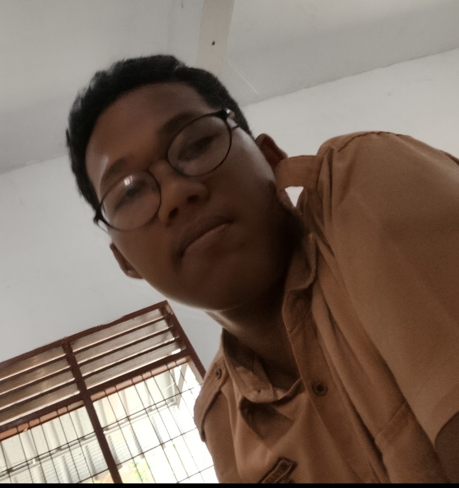

1. Riwayat Sekolah
- SMK Negeri 9 (2025 – sekarang) - Jurusan RPL
- SMP Darussalam Medan (2022 – 2025)
- SD Negeri 064011 (2016 – 2022)


Tagline / Moto Hidup: "Belajar tanpa henti, berkarya tanpa batas, dan bermanfaat bagi sesama."

| Organisasi / Kegiatan | Peran & Keterangan |
|---|---|
| Remaja Masjid (RM) | Anggota Divisi Acara: kegiatan kami itu ada beberapa hal seperti Membersihkan masjid, membangunkan sahur, dan kegiatan sosial lainnya. |
Hobi utama saya adalah Mengenai Motor. Melalui motor, saya dapat melakukan beberapa hal seperti berimajinasi mengenai bodi motor yang ingin dibuat supaya tampilan lebih bagus, lalu bereksperimen terhadap mesin motor, dan membuat hal baru pada kelistrikan motor.